Does a protective skin microbiome save the population?
- The question and the method
- Part A. Bsal in fire salamanders
- Part B. Bd in common toads
- Part C. Bd in frogs
- How much did each step move the answer?
- Does the effect of one piece of realism depend on the others?
- All steps
- What the exercise shows
- What is not in the models
- References
The question and the method
Amphibians can be treated with skin bacteria that inhibit the chytrid fungi Batrachochytrium dendrobatidis (Bd) and B. salamandrivorans (Bsal). Would that protect a population?
The answer a model gives depends on how much biology is in it. This vignette makes that dependence visible. For each of three host–pathogen systems it:
- starts from the simplest model of the host and the pathogen;
- adds the biology of the host and pathogen one piece at a time, with no treatment;
- adds the biology of the treatment one piece at a time;
- after every step, records the same two outcomes: the population without treatment, and the population under one fixed reference treatment;
- ends with chance: the last model of each part is run again with whole animals and random events, many times over.
Every step keeps everything before it and changes one thing. Most steps add a piece of biology; a few replace a placeholder with a more realistic version of the same piece (blocking infection with the effect seen in trials, a fixed “treated” state with bacteria that decline). The equations at the start of each part list the settings every step uses. The final sections measure how much each addition moved the answer, and check with a factorial design whether the effect of one piece of realism depends on the others. A second vignette repeats the exercise in a single nested model, where every combination of pieces can be compared like for like.
| Part | System | Simplest model |
|---|---|---|
| A | Bsal in fire salamanders | susceptible and infectious adults |
| B | Bd in common toads | Mitchell et al. (2008) pond model |
| C | Bd in frogs | Briggs et al. (2010) load model |
[!IMPORTANT]
The published models (Schmidt et al. 2017, Mitchell et al. 2008, Briggs et al. 2010) are reproduced from their papers. Everything added to them is new work in this package and is not a published result. Values taken from experiments are read from the package’s parameter compendium and are named where they are used. All other added values (efficacy, coverage, spread, exposure windows, clearance) are illustrative: they show what the model does, not what a real treatment would achieve.
using Chytridiomycosis, Plots, Printf
using Distributions: LogNormal, quantile
using Random: Xoshiro, shuffle
default(linewidth = 2, size = (720, 380), legendfontsize = 8, guidefontsize = 9,
titlefontsize = 10, left_margin = 4Plots.mm, bottom_margin = 4Plots.mm)
include("../diagram.jl")
T(; kw...) = MicrobiomeTreatment(; kw...)
# One row per step, filled in as we go. `untreated` and `treated` are the two outcomes;
# NaN where one does not apply.
ladder = NamedTuple[]
function step!(system, phase, added, untreated, treated, note)
n = count(r -> r.system == system, ladder)
push!(ladder, (; system, n, phase, added, untreated, treated, note))
return (step = n, untreated = round(untreated, digits = 3), treated = round(treated, digits = 3))
end
function ladder_plot(system, xlabel)
rows = filter(r -> r.system == system, ladder)
k = length(rows)
labels = ["$(r.n). $(r.added)" for r in rows]
z(x) = isnan(x) ? 0.0 : x
bar((1:k) .- 0.2, [z(r.untreated) for r in rows]; orientation = :h, bar_width = 0.38,
label = "no treatment", color = :gray70, yticks = (1:k, labels), yflip = true, xlabel,
xlims = (0, 1.05), xticks = 0:0.25:1, size = (840, 80 + 36k), left_margin = 6Plots.mm,
legend = :outertop, legend_column = 2)
bar!((1:k) .+ 0.2, [z(r.treated) for r in rows]; orientation = :h, bar_width = 0.38,
label = "with treatment", color = :steelblue)
endladder_plot (generic function with 1 method)Part A. Bsal in fire salamanders
The outcome in Part A is the mean number of adults over the ten years after Bsal arrives, as a fraction of carrying capacity. The reference treatment is: every adult treated once, on the day Bsal arrives, with bacteria that block 99% of infections for life.
Host and pathogen
Step 0. Susceptible and infectious adults
The simplest model: an adult is susceptible or infectious, infection passes by contact, and infectious animals die of the disease. This is the model of Schmidt et al. (2017) with its latent period made negligibly short.
p = SchmidtParameters(:schmidt2017)
p_si = Chytridiomycosis.with(p; e = 5000.0) # latent period under two hours
block = T(efficacy = 0.99)
sli(q, tr; kw...) = solve(ProbioticSLIProblem(q, tr; kw...))
u0, t0 = sli(p_si, T()), sli(p_si, block; coverage = 1.0)
@printf("R0 = %.1f\n", basic_reproduction_number(p_si))
step!("Bsal", "host", "susceptible and infectious adults", u0.mean_hosts, t0.mean_hosts,
"collapse; treated adults live but are not replaced")R0 = 24.8
(step = 0, untreated = 0.003, treated = 0.338)Step 1. A latent period
Infected animals are not infectious at once (Schmidt et al. 2017, as published).
u1, t1 = sli(p, T()), sli(p, block; coverage = 1.0)
@printf("R0 = %.1f\n", basic_reproduction_number(p))
step!("Bsal", "host", "+ latent period (Schmidt 2017)", u1.mean_hosts, t1.mean_hosts,
"almost no change: a one-day delay against a one-week illness")R0 = 24.8
(step = 1, untreated = 0.004, treated = 0.338)plot(u1.t, u1.hosts ./ p.K; label = "no treatment", xlabel = "years since Bsal arrived",
ylabel = "adults (fraction of K)")
plot!(t1.t, t1.hosts ./ p.K; label = "all adults treated once")
plot!(t1.t, t1.treated ./ p.K; label = "of which still treated", linestyle = :dash)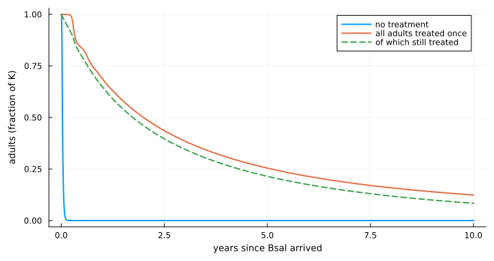
Treated adults survive, but the population still declines: recruits are born untreated and Bsal is still circulating.
Step 2. A larval stage
Salamanders have aquatic larvae. Here they are added as a stage that Bsal does not infect.
clean_larvae = BsalLarvalStage(carry_over = 0.0)
lar(st, tr; kw...) = solve(ProbioticLarvalProblem(p, st, tr; kw...))
u2, t2 = lar(clean_larvae, T()), lar(clean_larvae, block; coverage = 1.0)
step!("Bsal", "host", "+ larval stage, not infected", u2.mean_adults, t2.mean_adults,
"untreated population no longer vanishes: larvae are a refuge")(step = 2, untreated = 0.044, treated = 0.336)plot(u1.t, max.(u1.hosts ./ p.K, 1e-12); yscale = :log10, label = "adults only (step 1)",
xlabel = "years since Bsal arrived", ylabel = "adults (fraction of K), no treatment",
legend = :bottomright)
plot!(u2.t, u2.adults ./ p.K; label = "with a larval stage (step 2)")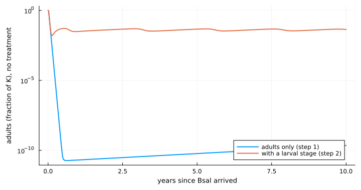
Larvae already in the water metamorphose after the adult epidemic has burnt out. The near-extinction in the adults-only model was partly a result of having no other stage.
Step 3. Larvae can be infected
Fire salamander larvae can be infected experimentally without showing disease, and half carried the infection through metamorphosis (Wang et al. 2021; the count is read from the compendium). The transmission rate from adults to larvae is illustrative.
stage = BsalLarvalStage(:wang2021; adult_to_larva = 5.2)
@printf("carry-over through metamorphosis: %.1f; R0 = %.1f\n", stage.carry_over,
basic_reproduction_number(p, stage))
u3, t3 = lar(stage, T()), lar(stage, block; coverage = 1.0)
step!("Bsal", "host", "+ larvae infected, carry-over 0.5", u3.mean_adults, t3.mean_adults,
"small change at this carry-over")carry-over through metamorphosis: 0.5; R0 = 24.9
(step = 3, untreated = 0.039, treated = 0.334)This is the host model used for the rest of Part A.
The host model in equations
Densities are adult females and larvae per hectare; time is in years. Steps 0 and 1 use ProbioticSLIProblem, which has adults only. Step 1 is the model of Schmidt et al. (2017):
\[\begin{aligned} \frac{dS}{dt} &= b S - (d + \gamma N) S - \beta S I \\ \frac{dL}{dt} &= \beta S I - (d + e + \gamma N) L \\ \frac{dI}{dt} &= e L - (d + d_I + \gamma N) I \end{aligned}\]
with $N = S + L + I$ and $\gamma = (b - d)/K$, so that without Bsal $S$ settles at $K$. Only susceptible adults breed. Bsal enters as $I = 0.01$ per hectare (one per square kilometre) at $t = 0$.
- Step 0 is the same system with $e = 5000$ per year, so that $L$ empties within hours and the model is in effect $S \to I$. The printed $R_0 = \beta e K / ((b + e)(b + d_I))$, which tends to $\beta K / (b + d_I)$ as $e$ grows.
- Step 1 sets $e$ to its published value: a latent period of about one day.
Steps 2 and 3 use ProbioticLarvalProblem, which adds uninfected and infected larvae, $W_S$ and $W_I$:
\[\begin{aligned} \frac{dW_S}{dt} &= b' S - (m + \mu_W) W_S - \beta_{WA} I W_S \\ \frac{dW_I}{dt} &= \beta_{WA} I W_S - (m + \mu_W) W_I \\ \frac{dS}{dt} &= m W_S + (1 - c)\, m W_I - (d + \gamma N) S - \beta S I \\ \frac{dL}{dt} &= c\, m W_I + \beta S I - (d + e + \gamma N) L \\ \frac{dI}{dt} &= e L - (d + d_I + \gamma N) I \end{aligned}\]
- Step 2 replaces the recruitment term $b S$ in $dS/dt$ with births into the larval stage, $b' S$ with $b' = b (m + \mu_W)/m$. Larvae leave by metamorphosis at rate $m$ or die at rate $\mu_W$. The choice of $b'$ keeps the Bsal-free state of step 1 ($S = K$, plus $W_S = bK/m$ larvae). Here $\beta_{WA} = 0$ and $c = 0$, so $W_I$ stays at zero.
- Step 3 adds infection of larvae by infectious adults ($\beta_{WA} I W_S$) and carry-over: an infected larva becomes a latent adult with probability $c$, and a susceptible adult otherwise. Infected larvae do not die of Bsal and, in Part A, infect no one. (The code also has larva-to-larva and larva-to-adult transmission,
larva_to_larvaandlarva_to_adult; both are zero throughout Part A.) The printed $R_0$ is the largest eigenvalue of the next-generation matrix for $(W_I, L, I)$ at the Bsal-free state.
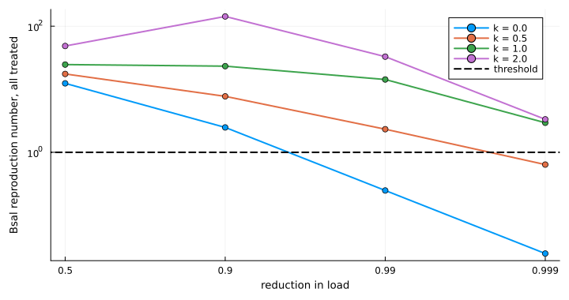
| Symbol | Meaning | Value or source |
|---|---|---|
| $S, L, I$ | susceptible, latent and infectious adults (per ha) | start at $S = K$ |
| $W_S, W_I$ | uninfected and infected larvae (per ha) | start at $W_S = bK/m$ |
| $b$ | recruitment rate | 0.39 per yr, compendium (schmidt2017) |
| $d$ | natural death rate | 0.125 per yr, compendium (schmidt2017) |
| $d_I$ | death rate from Bsal | 52 per yr, compendium (schmidt2017) |
| $e$ | latent to infectious | 364 per yr, compendium (schmidt2017); 5000 in step 0 |
| $\beta$ | transmission between adults | 52 ha per yr, compendium (schmidt2017) |
| $K$ | carrying capacity | 25 per ha, compendium (schmidt2017) |
| $\gamma$ | density dependence | $(b - d)/K$ |
| $m$ | metamorphosis rate, 1/larval period | 1/0.33 per yr, illustrative |
| $\mu_W$ | larval death rate | 1 per yr, illustrative |
| $b'$ | larvae born per susceptible adult | $b (m + \mu_W)/m$ |
| $\beta_{WA}$ | transmission from adults to larvae | 0 in step 2; 5.2 ha per yr in step 3, illustrative |
| $c$ | carry-over through metamorphosis | 0 in step 2; 0.5 in step 3, compendium (wang2021: 5 of 10 larvae) |
The outcome is the mean of $(S + L + I)/K$ over the ten years after Bsal arrives.
Treatment
The reference treatment of step 3 is now made more realistic. Each step states what changed.
The treatment in equations
Every class is split into untreated ($U$) and treated ($T$). With all treatment terms present, the model of ProbioticLarvalProblem is, for adults,
\[\begin{aligned} \frac{dS_U}{dt} &= m\,[W_{SU} + (1 - r) W_{ST}] + (1 - c)\, m\,[W_{IU} + (1 - r) W_{IT}] \\ &\quad - (d + \gamma N) S_U - \lambda_A S_U + \omega S_T - a_A S_U \\ \frac{dS_T}{dt} &= r\, m W_{ST} + (1 - c)\, r\, m W_{IT} - (d + \gamma N) S_T - (1 - \varepsilon) \lambda_A S_T - \omega S_T + a_A S_U \\ \frac{dL_U}{dt} &= c\, m\,[W_{IU} + (1 - r) W_{IT}] + \lambda_A S_U - (d + e + \gamma N) L_U + \omega L_T - a_A L_U \\ \frac{dL_T}{dt} &= c\, r\, m W_{IT} + (1 - \varepsilon) \lambda_A S_T - (d + e + \gamma N) L_T - \omega L_T + a_A L_U \\ \frac{dI_U}{dt} &= e L_U - (d + d_I + \gamma N) I_U + \omega I_T - a_A I_U \\ \frac{dI_T}{dt} &= e L_T - (d + (1 - \tau) d_I + \gamma N) I_T - \omega I_T + a_A I_U \end{aligned}\]
and for larvae
\[\begin{aligned} \frac{dW_{SU}}{dt} &= b'\,[S_U + S_T + \tau (L_T + I_T)] - (m + \mu_W) W_{SU} - \lambda_W W_{SU} + \omega W_{ST} - a_W W_{SU} \\ \frac{dW_{ST}}{dt} &= -(m + \mu_W) W_{ST} - (1 - \varepsilon) \lambda_W W_{ST} - \omega W_{ST} + a_W W_{SU} \\ \frac{dW_{IU}}{dt} &= \lambda_W W_{SU} - (m + \mu_W) W_{IU} + \omega W_{IT} - a_W W_{IU} \\ \frac{dW_{IT}}{dt} &= (1 - \varepsilon) \lambda_W W_{ST} - (m + \mu_W) W_{IT} - \omega W_{IT} + a_W W_{IU} \end{aligned}\]
with $N$ all adults and
\[\begin{aligned} \lambda_A &= \beta\,[I_U + (1 - \sigma) I_T], \qquad \lambda_W = \beta_{WA}\,[I_U + (1 - \sigma) I_T], \\ a_A &= \eta\, \frac{S_T + L_T + I_T}{N}, \qquad a_W = \eta\, \frac{W_{ST} + W_{IT}}{W_{SU} + W_{ST} + W_{IU} + W_{IT}}, \\ \omega &= \frac{\ln 2}{h}, \qquad (\varepsilon, \tau, \sigma) = g(t - t_k)\,(\varepsilon_0, \tau_0, \sigma_0), \qquad g(a) = \frac{1 + 1/F}{1 + 2^{a/h_B}/F}. \end{aligned}\]
Treatment itself is a pulse. At each treatment time $t_k$, a fraction $\phi$ (coverage) of every untreated class of the treated stage moves to the matching treated class, and the clock of $g$ restarts ($t_k$ is the most recent application). Bsal arrives just after any treatment at the same time. Recruits are born untreated. In steps 0 and 1 (ProbioticSLIProblem, no larvae) the adult equations are the same without the metamorphosis terms, and recruits $b\,[S_U + S_T + \tau (L_T + I_T)]$ enter $S_U$ directly. Treated, infected adults breed in proportion to $\tau$: this is an assumption of the code, and with $\tau = 0$ it is Schmidt’s rule. (The code also has an environmental route of spread, environmental, and inheritance from treated mothers, maternal; both are zero throughout Part A and are left out above.)
What each step switches on:
- Steps 0–3, reference treatment:
efficacy = 0.99, adults treated once at $t = 0$ with $\phi = 1$. So $\varepsilon_0 = 0.99$ and $\omega = \eta = \tau_0 = \sigma_0 = 0$, $g = 1$: treated adults are infected at 1% of the untreated rate, for life. - Step 4,
half_life = 1.0: $\omega = \ln 2$ per year; treated animals revert to untreated. - Step 5,
direct = 50.0: $\eta = 50$ per year. An untreated animal acquires the bacteria in proportion to the treated fraction of its own stage. The vignette prints the microbiome’s reproduction number $R_m = \eta/(\omega + b)$, with adult turnover $b$, and the long-run coverage $1 - 1/R_m$. Larvae are never treated in this step, so recruits acquire the bacteria only from adults. - Step 6,
tolerance = 0.9and noefficacy: $\varepsilon_0 = 0$, $\tau_0 = 0.9$. A treated, infected adult dies of Bsal at $(1 - \tau) d_I$, stays infectious, and breeds at $\tau$. The printed reproduction number, with all adults treated, is $R_0\,[1 - \phi + \phi M]$ with $M = (1 - \varepsilon)(1 - \sigma)(b + d_I)/(b + (1 - \tau) d_I)$. This uses the adults-only model and ignores gain or loss of the bacteria during an infection. - Step 7,
load_reducing_treatmentwith reduction in load $\rho$ anddeath_exponent$k$: $\sigma_0 = \rho$ and $\tau_0 = 1 - (1 - \rho)^k$, with $\varepsilon_0 = 0$. The run uses $\rho = 0.99$, $k = 1$, so $\sigma_0 = \tau_0 = 0.99$; loss and spread as in step 5. - Step 8: the treatment of step 7, with
treat = :larvaeor:both, which applies the pulse to $W_{SU} \to W_{ST}$ and $W_{IU} \to W_{IT}$ as well, every quarter;retentionis $r$. Treated larvae shed less, through $\sigma$ in $\lambda_A$ and $\lambda_W$; larvae do not die of Bsal, so tolerance does nothing for them. - Step 9,
abundance_half_life = 5/365,protective_fold = 100, on top of step 8: $g$ is no longer 1. It multiplies $\varepsilon_0$, $\tau_0$ and $\sigma_0$ (here $\tau_0$ and $\sigma_0$), falls to one half about $\log_2 F$ abundance half-lives after each application, and is reset to 1 by the next. All treated animals share one clock. The loss of step 4 ($\omega$) and the spread of step 5 ($\eta$) stay.
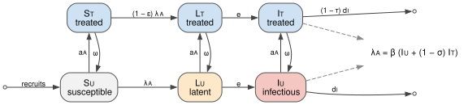
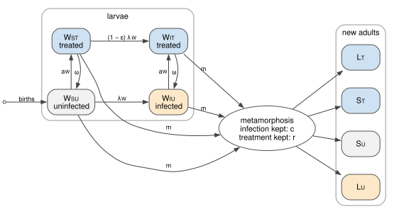
| Symbol | Meaning | Value or source |
|---|---|---|
| $U, T$ | untreated, treated | |
| $\varepsilon_0$ | efficacy: reduction in the infection rate | 0.99 in steps 0–5; 0 from step 6; illustrative |
| $\tau_0$ | tolerance: reduction in death from Bsal | 0.9 in step 6; 0.99 from step 7; illustrative |
| $\sigma_0$ | shedding_reduction: reduction in shedding | 0.99 from step 7; illustrative |
| $h$, $\omega$ | half_life of treatment and loss rate $\ln 2 / h$ | $h$ = 1 yr from step 4, before that none ($\omega = 0$); illustrative |
| $\eta$ | direct: spread of the bacteria | 50 per yr from step 5, before that 0; illustrative |
| $\phi$ | coverage at each treatment | 1 |
| $t_k$ | treat_times | 0 in steps 0–7; every quarter from 0 to 9.75 yr in steps 8–9 (monthly in one run) |
| $r$ | retention at metamorphosis | 0 or 1 in step 8, 1 in step 9; illustrative, not measured |
| $h_B$ | abundance_half_life of the applied bacteria | 5 days in step 9, from this project’s fits to Knapp et al. (2022) and Madison et al. (2025) |
| $F$ | protective_fold | 100 in step 9 (10 and 1000 in the plot); illustrative, not measured |
| $g$ | protection: share of the full effect left after time $a$ | 1 except in step 9 |
Step 4. Protection is lost
A treated animal reverts to untreated, with a half-life of one year.
a = lar(stage, T(efficacy = 0.99, half_life = 1.0); coverage = 1.0)
step!("Bsal", "treatment", "+ protection lost, half-life 1 year", u3.mean_adults, a.mean_adults,
"collapse only delayed")(step = 4, untreated = 0.039, treated = 0.133)Step 5. The bacteria spread between animals
Treated animals pass the bacteria to others, so protection can reach the recruits.
spread = T(efficacy = 0.99, half_life = 1.0, direct = 50.0)
@printf("microbiome reproduction number %.0f, long-run coverage %.2f\n",
microbiome_reproduction_number(spread; turnover = p.b), equilibrium_coverage(spread; turnover = p.b))
a = lar(stage, spread; coverage = 1.0)
step!("Bsal", "treatment", "+ bacteria spread between animals", u3.mean_adults, a.mean_adults,
"full protection: the microbiome maintains itself")microbiome reproduction number 46, long-run coverage 0.98
(step = 5, untreated = 0.039, treated = 0.999)A model stopped here says: a self-spreading, strongly protective microbiome works, and nothing else does.
Step 6. What trials show: survival, not fewer infections
In challenge trials, treated animals were infected as often as untreated ones, but fewer died. The compendium holds the counts from one trial in Rana muscosa (Harris et al. 2009):
h = parameter_set(:harris2009ismej)
mortality_reduction(h.deaths_treated, h.n_treated, h.deaths_control, h.n_control; rng = Xoshiro(1))(median = 0.9528399509303813, lower = 0.5571631729768851, upper = 0.9998974605554769)So the mechanism is changed: treatment reduces disease-induced death (tolerance) and does not block infection. A treated, infected animal stays infectious. Loss and spread are as in step 5.
tolerant = T(tolerance = 0.9, half_life = 1.0, direct = 50.0)
@printf("Bsal reproduction number if everyone is treated: %.0f (untreated %.0f)\n",
effective_reproduction_number(p, tolerant, 1.0), basic_reproduction_number(p))
a = lar(stage, tolerant; coverage = 1.0)
step!("Bsal", "treatment", "mechanism as in trials: survive, still infected", u3.mean_adults,
a.mean_adults, "fails; survivors shed for longer, so transmission rises")Bsal reproduction number if everyone is treated: 232 (untreated 25)
(step = 6, untreated = 0.039, treated = 0.025)Step 7. Lower load: less death and less shedding
Bacteria that suppress the fungus should lower the load on the animal, and so reduce shedding as well as death. Both now follow from one reduction in load: shedding in proportion to load, death in proportion to load raised to a power k.
reductions = [0.5, 0.9, 0.99, 0.999]
ks = [0.0, 0.5, 1.0, 2.0]
R = [effective_reproduction_number(p, load_reducing_treatment(ρ; death_exponent = k), 1.0)
for ρ in reductions, k in ks]
plot(string.(reductions), R; yscale = :log10, marker = :circle, xlabel = "reduction in load",
ylabel = "Bsal reproduction number, all treated",
label = permutedims(["k = $k" for k in ks]), legend = :topright)
hline!([1.0]; color = :black, linestyle = :dash, label = "threshold")With death proportional to load (k = 1) the two effects nearly cancel: the animal sheds less but for longer.
a = lar(stage, load_reducing_treatment(0.99; half_life = 1.0, direct = 50.0); coverage = 1.0)
step!("Bsal", "treatment", "+ lower load (99%): also less shedding", u3.mean_adults, a.mean_adults,
"partial; survivors remain infected")(step = 7, untreated = 0.039, treated = 0.189)Step 8. Treat larvae as well
With larvae in the host model they can be treated too. Whether a treated larva keeps the bacteria through metamorphosis (retention) has not been measured. The treatment is that of step 7: it lowers the load, is lost with a half-life of a year, and spreads.
quarterly = 0:0.25:9.75
step7 = load_reducing_treatment(0.99; half_life = 1.0, direct = 50.0)
options = [("adults, once", (;)),
("larvae, quarterly; lost at metamorphosis", (treat = :larvae, treat_times = quarterly)),
("larvae, quarterly; kept", (treat = :larvae, treat_times = quarterly, retention = 1.0)),
("both stages, quarterly; kept", (treat = :both, treat_times = quarterly, retention = 1.0))]
vals = [lar(stage, step7; coverage = 1.0, kw...).mean_adults for (_, kw) in options]
bar(vals; orientation = :h, yticks = (1:4, first.(options)), yflip = true, legend = false,
xlabel = "mean adults (fraction of K)", xlims = (0, 1.05), xticks = 0:0.25:1,
left_margin = 6Plots.mm, size = (820, 230), color = :steelblue)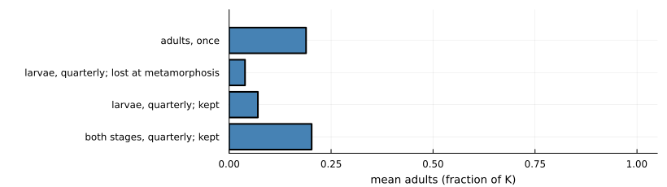
both_block = lar(stage, block; coverage = 1.0, treat = :both, treat_times = quarterly, retention = 1.0)
@printf("the same schedule with bacteria that block infection and last: %.2f\n", both_block.mean_adults)
step!("Bsal", "treatment", "+ treat both stages, kept through metamorphosis", u3.mean_adults, vals[4],
"little gain: treated animals still carry and pass on Bsal")the same schedule with bacteria that block infection and last: 1.00
(step = 8, untreated = 0.039, treated = 0.202)Treating larvae as well barely helps, because with this mechanism a treated animal is still infected and still transmits. The same schedule with bacteria that block infection and last would protect the population fully with no spread at all (printed above). Whether treating larvae is worth doing depends on what the bacteria do, a dependence the factorial below measures.
Step 9. How long the bacteria really last
Two open datasets (a field trial in Rana sierrae, Knapp et al. 2022, and a laboratory trial in Xenopus laevis, Madison et al. 2025) give the abundance of applied bacteria over time. Fitting an exponential decline gives half-lives of 3 to 14 days, and 4 to 5 days in the field. (The fits are this project’s own.) Protection now wanes with abundance. protective_fold is how far abundance can fall before half the effect is lost; it has not been measured.
days = 0:1:150
plot(xlabel = "days since application", ylabel = "fraction of full protection", legend = :topright)
for F in (10.0, 100.0, 1000.0)
w = T(efficacy = 0.99, abundance_half_life = 5 / 365, protective_fold = F)
plot!(days, [protection(w, d / 365) for d in days];
label = @sprintf("fold %g: half gone after %.0f days", F, 365 * protection_duration(w)))
end
current()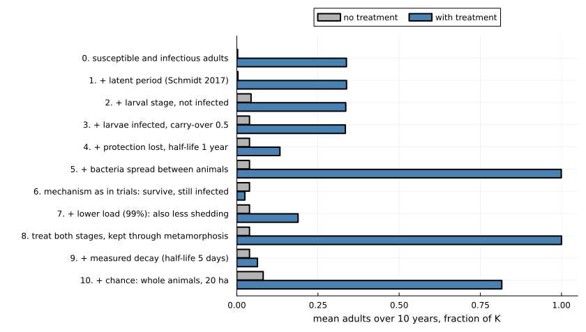
waning = load_reducing_treatment(0.99; half_life = 1.0, direct = 50.0,
abundance_half_life = 5 / 365, protective_fold = 100.0)
a = lar(stage, waning; coverage = 1.0, treat = :both, treat_times = quarterly, retention = 1.0)
monthly = lar(stage, waning; coverage = 1.0, treat = :both, treat_times = 0:(1 / 12):9.95, retention = 1.0)
@printf("dosed monthly instead of quarterly: %.2f\n", monthly.mean_adults)
step!("Bsal", "treatment", "+ fitted decay (half-life 5 days)", u3.mean_adults, a.mean_adults,
"fails: protection lasts about a month")dosed monthly instead of quarterly: 0.06
(step = 9, untreated = 0.039, treated = 0.046)Step 10. Chance
Every model so far treats animals as continuous densities, so a population, or Bsal, can be reduced to a fraction of an animal and grow back. The last step runs the same model with whole animals and random events (StochasticNestedProblem, which reproduces the equations when the population is large). Bsal arrives as one infected adult in 20 hectares, 500 adults, and each case is run 100 times.
In the stochastic version each class holds a whole number of animals in an area of 20 ha: 500 adults ($K \times 20$) and 64 larvae ($bK/m \times 20$) at the start. Every term of the equations above becomes a per-animal rate, evaluated at densities (count divided by area). In each step of six hours ($\Delta t = 1/1460$ yr) an animal leaves its class with probability $1 - e^{-R \Delta t}$, where $R$ is the sum of its rates out, and goes to each destination with probability in proportion to that rate. Births are Poisson, with mean the birth term of the equations times the area times $\Delta t$. A treatment treats each untreated animal with probability $\phi$. The transitions come from the package’s nested model (NestedChytridProblem); with the latent class, larvae and larval infection switched on, as here, they are the equations above, so the two versions agree when the area is large. One difference from the equations: one infected adult in 20 ha is 0.05 per ha, against 0.01 per ha in steps 0–9.
using Random: Xoshiro
host_a = ChytridBiology(:wang2021; latent = true, larvae = true, larval_infection = true)
chanceA(tr; kw...) = [solve(StochasticNestedProblem(p, host_a, tr; area = 20.0, kw...); rng = Xoshiro(s))
for s in 1:100]
meanA(rs) = sum(r.mean_adults for r in rs) / length(rs)
cu = chanceA(T())
ct = chanceA(waning; coverage = 1.0, treat = :both, treat_times = quarterly, retention = 1.0)
cb = chanceA(block; coverage = 1.0)
@printf("Bsal lost within 10 years, untreated: %d of 100 runs\n", count(r -> !isnan(r.pathogen_extinction), cu))
@printf("reference treatment of step 3 (block 99%%, adults once): %.2f with chance, %.2f in the equations\n",
meanA(cb), t3.mean_adults)
step!("Bsal", "chance", "+ chance: whole animals, 20 ha", meanA(cu), meanA(ct),
"still fails: treated animals are infected and pass Bsal on")Bsal lost within 10 years, untreated: 100 of 100 runs
reference treatment of step 3 (block 99%, adults once): 0.95 with chance, 0.33 in the equations
(step = 10, untreated = 0.081, treated = 0.093)For the final treatment chance changes little. Treated animals are infected as readily as untreated ones, so Bsal establishes and the population collapses before Bsal is lost. Chance matters a great deal for the step-3 reference treatment, which blocks infection: with whole animals, Bsal arriving in a population that has just been treated usually fails to establish and is lost, and does not come back, so that treatment keeps nearly the whole population instead of a third. The second vignette explores this in detail.
Part A summary
ladder_plot("Bsal", "mean adults over 10 years, fraction of K")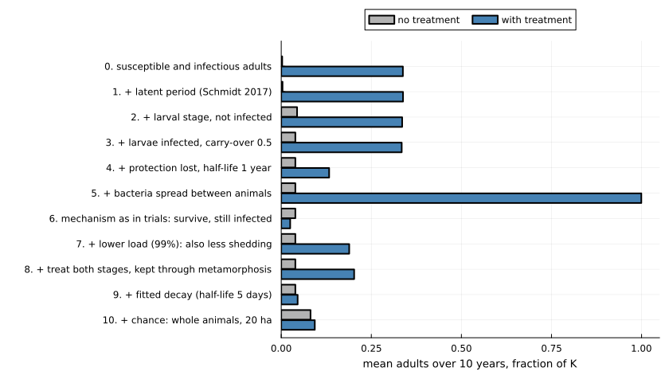
Part B. Bd in common toads
The outcome in Part B is the number of adults in years 25 to 35 after Bd arrives, as a fraction of the number without Bd. The reference treatment is: 80% of tadpoles treated at hatching every year with bacteria that block 90% of infections for the season. The parameter set is the one behind Figure 2d of Mitchell et al. (2008).
Host and pathogen
Step 0. The pond model
Mitchell’s model is the simplest available for this system, though it is not as simple as step 0 of Part A: tadpoles are infected by zoospores in the pond, infected tadpoles are removed at metamorphosis, and juveniles and adults are never infected.
The equations below are the host model as it stands after step 3. Time $t$ is in years and $T$ is the time of year. Between the yearly events,
\[\begin{aligned} \frac{dP_X}{dt} &= -(\mu_P + \nu Z)\,P_X \\ \frac{dP_Y}{dt} &= \nu Z\,P_X - (\mu_P + \alpha_P)\,P_Y \\ \frac{dM}{dt} &= -(\mu_J + \varepsilon)\,M \\ \frac{dA_X}{dt} &= \varepsilon M \left(1 - \frac{A_X + A_Y}{K}\right) - \mu_A A_X - \chi(t)\,\nu_A Z A_X + \sigma_A A_Y \\ \frac{dA_Y}{dt} &= \chi(t)\,\nu_A Z A_X - (\mu_A + \alpha_A + \sigma_A)\,A_Y \\ \frac{dZ}{dt} &= \rho P_Y + \chi(t)\,\rho_A A_Y + \gamma Z e^{-\varphi Z} - \mu_Z Z \end{aligned}\]
where $\chi(t) = 1$ while adults are at the pond ($t_1 \le T < t_1 + d_A/365$) and 0 otherwise. Three events happen each year:
\[\begin{aligned} T = t_1 &: \quad P_X \leftarrow P_X + \iota\psi\,(A_X + A_Y) \\ T = t_2 &: \quad J_0 = P_X\,(1 - q + q\,s_J) + P_Y\,s_J, \qquad q = 1 - e^{-\nu Z d_J / 365}, \qquad P_X,\ P_Y \leftarrow 0 \\ \omega \text{ after } t_2 &: \quad M \leftarrow M + J_0\,e^{-\mu_J \omega} \end{aligned}\]
At breeding, tadpoles are born to every adult. At metamorphosis the tadpoles leave the pond as a juvenile cohort $J_0$; $Z$ in $q$ is its value at that moment. A cohort only dies (at rate $\mu_J$) until it is $\omega$ old, and then joins the pool $M$ of juveniles that can mature into adults. $M$ is Mitchell’s $\int_\omega^\infty J\,da$: following each cohort in closed form solves the paper’s age-structured juvenile equation exactly.
| Step | What it adds | Terms |
|---|---|---|
| 0 | Mitchell et al. (2008), equations (2.1) to (2.5) | $s_J = 0$, $d_J = 0$, no $A_Y$ ($\chi = 0$) |
| 1 | infected metamorphs can survive | $s_J > 0$ |
| 2 | metamorphs are exposed as they leave | $d_J > 0$, so $q > 0$ |
| 3 | adults are infected at the pond, shed there and clear the infection | $A_Y$, $\chi(t)$, $\nu_A$, $\rho_A$, $\sigma_A$ |
With steps 1 to 3 switched off, the equations are those of Mitchell et al. (2008), and the package reproduces the outcomes of their Fig. 2b to 2d. Bd arrives as $Z_0$ zoospores at the start of year 0, after 100 years without Bd. Following the paper, the toads are declared extinct (every stage set to zero) below 50 adults, and Bd below 100 zoospores. The package tests the toads at each yearly event, and Bd only at breeding, when there are no tadpoles. In step 3 Bd is not removed at breeding while an infected adult is present.
| Symbol | Meaning | Value or source |
|---|---|---|
| $P_X$, $P_Y$ | uninfected and infected tadpoles | |
| $J_0$, $M$ | a juvenile cohort at metamorphosis; juveniles older than $\omega$ | |
| $A_X$, $A_Y$ | uninfected and infected adults | |
| $Z$ | free-living zoospores in the pond | |
| $t_1$, $t_2$ | day of breeding and of metamorphosis | days 60 and 155, compendium (mitchell2008) |
| $\omega$ | age at which juveniles can start to mature | 500 days, compendium (mitchell2008) |
| $\iota$, $\psi$ | mating couples per adult; eggs per couple | 0.14, 2000, compendium (mitchell2008) |
| $\varepsilon$ | maturation rate of juveniles older than $\omega$ | 0.16 per year, compendium (mitchell2008) |
| $\mu_P$, $\mu_J$, $\mu_A$ | natural death rates of tadpoles, juveniles, adults | 7.55, 0.73, 0.73 per year, compendium (mitchell2008) |
| $K$ | limit on the number of adults | 14,000, compendium (mitchell2008) |
| $\alpha_P$ | extra death rate of infected tadpoles | 1.62 per year, compendium (mitchell2008) |
| $\nu$ | infection rate per zoospore | $2.3 \times 10^{-8}$ per zoospore per year, compendium (mitchell2008, Fig. 2d) |
| $\rho$ | zoospores released per infected tadpole | $6 \times 10^{6}$ per tadpole per year, compendium (mitchell2008, Fig. 2d) |
| $\mu_Z$ | zoospore death rate | 13 per year, compendium (mitchell2008) |
| $\gamma$, $\varphi$ | saprobic growth of zoospores and its density dependence | 0 (so the term is off), $10^{-6}$, compendium (mitchell2008) |
| $Z_0$ | zoospores introduced | $10^4$, package default |
| $s_J$ | chance that an infected metamorph survives and clears Bd | 0 (step 0); $1 - 72/101 = 0.29$ from step 1, compendium (smith2022) |
| $d_J$ | days metamorphs are exposed as they leave | 0 (steps 0, 1); 7 from step 2, illustrative |
| $d_A$ | days adults spend at the pond from $t_1$ | 30 in step 3, illustrative |
| $\nu_A$, $\rho_A$ | adult infection rate and shedding while at the pond | equal to $\nu$ and $\rho$ in step 3, illustrative |
| $\sigma_A$ | adult clearance rate | 1 per year in step 3, illustrative |
| $\alpha_A$ | extra death rate of infected adults | 0, illustrative |
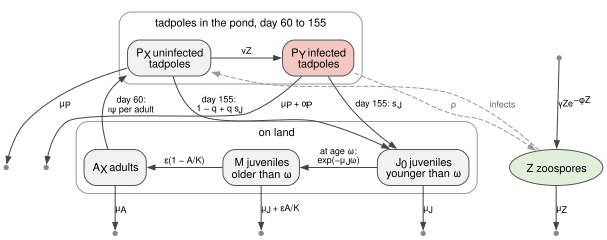
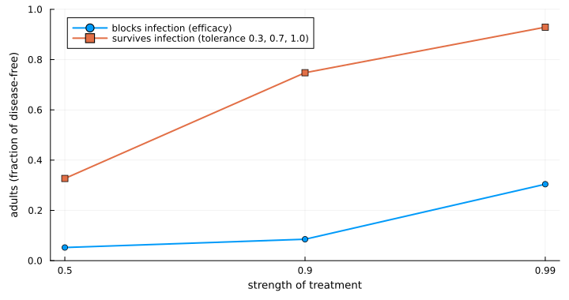
m = MitchellParameters(:mitchell2008; set = "fig2d")
none = PostMetamorphicInfection()
pond(tr; stages = none, kw...) = solve(ProbioticPondProblem(m, tr; stages, kw...))
rel(r) = r.A_mean / r.A_disease_free
ref = T(efficacy = 0.9)
u, t = pond(T()), pond(ref; coverage = 0.8)
@printf("Bd persists: untreated %s, treated %s\n", u.bd_persist, t.bd_persist)
step!("Bd toad", "host", "Mitchell 2008 pond model", rel(u), rel(t),
"untreated: toads and Bd both die out; treated: toads saved, Bd gone")Bd persists: untreated false, treated false
(step = 0, untreated = 0.0, treated = 0.975)series(r) = (r.t[r.t .>= -2], r.A[r.t .>= -2] ./ r.A_disease_free)
plot(series(u)...; label = "no treatment", xlabel = "years since Bd arrived",
ylabel = "adults (fraction of disease-free)", legend = :right)
plot!(series(t)...; label = "tadpoles treated every year")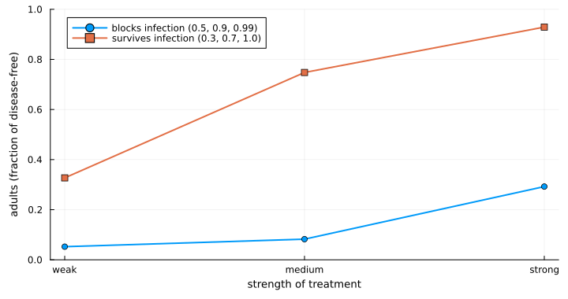
Unlike Bsal, the simplest treatment works here: the infected stage is short and a new cohort can be treated each year. It does not prevent the initial crash.
Step 1. Infected metamorphs can survive
Experiments show that toadlets exposed to Bd are infected, that most die, and that some survive (Smith et al. 2022; counts from the compendium).
s = parameter_set(:smith2022)
survival = 1 - s.deaths_exposed / s.n_exposed
@printf("toadlet survival after exposure: %.2f\n", survival)
st1 = PostMetamorphicInfection(metamorph_survival = survival)
u, t = pond(T(); stages = st1), pond(ref; coverage = 0.8, stages = st1)
@printf("Bd persists: untreated %s, treated %s\n", u.bd_persist, t.bd_persist)
step!("Bd toad", "host", "+ infected metamorphs can survive (0.29)", rel(u), rel(t),
"toads no longer die out, so nor does Bd; treatment now protects poorly")toadlet survival after exposure: 0.29
Bd persists: untreated true, treated true
(step = 1, untreated = 0.046, treated = 0.085)One added survival probability reverses both outcomes. The published “both die out” result depended on every infected animal dying; once some survive, the host persists, Bd persists with it, and blocking 90% of infections is no longer enough.
Step 2. Metamorphs are exposed as they leave the pond
st2 = PostMetamorphicInfection(metamorph_survival = survival, metamorph_exposure_days = 7.0)
u, t = pond(T(); stages = st2), pond(ref; coverage = 0.8, stages = st2)
step!("Bd toad", "host", "+ metamorphs exposed for a week on leaving", rel(u), rel(t),
"little further change")(step = 2, untreated = 0.046, treated = 0.082)Step 3. Adults carry Bd between years
Breeding adults carry Bd at low prevalence in field surveys. Here adults are infected while at the pond, shed there, and clear the infection over about a year. Adults are never treated (metamorphs lose the bacteria), so the treated tadpoles of the reference treatment now share the pond with infected adults.
st3 = PostMetamorphicInfection(metamorph_survival = survival, metamorph_exposure_days = 7.0,
adult_exposure_days = 30.0, adult_relative_shedding = 1.0, adult_clearance = 1.0)
r = solve(ToadStageProblem(m, st3))
@printf("Bd persists: %s; adult prevalence after breeding: %.2f\n", r.bd_persist, r.adult_prevalence)
u, t = pond(T(); stages = st3), pond(ref; coverage = 0.8, stages = st3)
@printf("the pond model with treatment, untreated: %.3f (stage model %.3f)\n", rel(u),
r.A_mean / r.A_disease_free)
step!("Bd toad", "host", "+ adults carry Bd between years", rel(u), rel(t),
"little change in this parameter set")Bd persists: true; adult prevalence after breeding: 0.99
the pond model with treatment, untreated: 0.044 (stage model 0.044)
(step = 3, untreated = 0.044, treated = 0.07)The host model of step 3 is used for the rest of Part B. With no treatment, the pond model with treated classes reproduces the stage model exactly (printed above).
Every “with treatment” outcome in Part B, including the reference treatment of steps 0 to 2, comes from the model below. From step 3 it sits on the step-3 host, with adults infected at the pond as above; adults are never treated. Tadpoles are split into untreated ($U$) and treated ($T$), uninfected and infected:
\[\begin{aligned} \frac{dP_{XU}}{dt} &= -(\mu_P + \nu Z)\,P_{XU} + \lambda P_{XT} \\ \frac{dP_{XT}}{dt} &= -\big(\mu_P + (1 - g\eta)\,\nu Z + \lambda\big)\,P_{XT} \\ \frac{dP_{YU}}{dt} &= \nu Z\,P_{XU} - (\mu_P + \alpha_P)\,P_{YU} + \lambda P_{YT} \\ \frac{dP_{YT}}{dt} &= (1 - g\eta)\,\nu Z\,P_{XT} - \big(\mu_P + (1 - g\tau)\,\alpha_P + \lambda\big)\,P_{YT} \\ \frac{dZ}{dt} &= \rho\,\big(P_{YU} + (1 - g\kappa)\,P_{YT}\big) + \chi\rho_A A_Y + \gamma Z e^{-\varphi Z} - \mu_Z Z \end{aligned}\]
with $M$, $A_X$ and $A_Y$ as in step 3 ($\chi = 1$ while adults are at the pond, and 0 otherwise; $A_Y = 0$ before step 3). A treated tadpole is infected less often (efficacy $\eta$), dies of infection less often (tolerance $\tau$) and sheds less (shedding reduction $\kappa$). It loses the bacteria at rate $\lambda = \ln 2 / h$. All three effects are scaled by the protection left since the last dose, $g = g(t - t_{\mathrm{dose}})$, where
\[g(a) = \frac{1 + 1/F}{1 + 2^{a/h_B}/F}.\]
$g = 1$ when the bacteria do not decline ($h_B = \infty$). Treatment enters through three events in each year from the arrival of Bd:
\[\begin{aligned} T = t_1 &: \quad P_{XU} \leftarrow P_{XU} + \iota\psi (A_X + A_Y), \quad \text{then}\quad P_{XT} \leftarrow P_{XT} + c\,P_{XU},\ \ P_{XU} \leftarrow (1 - c)\,P_{XU},\ \ t_{\mathrm{dose}} \leftarrow t \\ T = t_1 + d_k/365 &: \quad P_{iT} \leftarrow P_{iT} + c\,P_{iU},\ \ P_{iU} \leftarrow (1 - c)\,P_{iU} \ \ (i = X, Y),\ \ t_{\mathrm{dose}} \leftarrow t \\ T = t_2 &: \quad J_0 = P_{XU}(1 - q_U + q_U s_U) + P_{XT}(1 - q_T + q_T s_T) + P_{YU} s_U + P_{YT} s_T \end{aligned}\]
with $q_U = 1 - e^{-\nu Z d_J/365}$, $q_T = 1 - e^{-(1 - g\eta)\nu Z d_J/365}$, $s_U = s_J$ and $s_T = s_J + g\tau(1 - s_J)$. Tolerance therefore also raises the survival of infected metamorphs. Metamorphs lose the bacteria, so every juvenile and adult is untreated. With one dose at hatching and $h_B = 5$ days, $F = 100$, the protection left at metamorphosis 95 days later is $g = 1.01/(1 + 2^{19}/100) \approx 0.0002$. Each extra dose also treats a share $c$ of the tadpoles still untreated, so after the dose at hatching and four more, all but $0.2^5$ (about 0.03%) of tadpoles have been treated.
Each step keeps the treatment of the one before and changes one thing:
| Step | Treatment in the “with treatment” outcome |
|---|---|
| 0 to 3 (reference) | $\eta = 0.9$, $c = 0.8$, no loss of protection |
| 4 | + loss: $h = 0.05$ years (18 days) |
| 5 | $\tau = 0.7$ in place of $\eta$ (the effect seen in trials); loss as in step 4 |
| 6 | + lower shedding: $\tau = \kappa = 0.7$ (load_reducing_treatment(0.7)) |
| 7 | + protection declines with $h_B = 5$ days and $F = 100$; one dose |
| 8 | + doses also on days $d_k$ = 20, 40, 60 and 80 |
| 9 | + chance |
| Symbol | Meaning | Value or source |
|---|---|---|
| $c$ | share of untreated tadpoles treated at each dose | 0.8, illustrative |
| $\eta$ | efficacy: reduction in the infection rate | 0.9 (reference, step 4); 0.5, 0.9, 0.99 compared in step 5; illustrative |
| $\tau$ | tolerance: reduction in the extra death rate of infected tadpoles | 0.7 (steps 5 to 9); 0.3, 0.7, 1.0 compared in step 5; illustrative |
| $\kappa$ | shedding reduction | 0.7 from step 6 (load 70% lower, death proportional to load), illustrative |
| $h$, $\lambda$ | half-life of the treated state; $\lambda = \ln 2/h$ | 18 days from step 4, before that $\infty$; illustrative |
| $\chi$, $\rho_A$ | adults at the pond; their shedding rate | as in step 3 |
| $h_B$ | half-life of the applied bacteria | 5 days, this project’s fit to Knapp et al. (2022) and Madison et al. (2025) (Part A, step 9) |
| $F$ | starting abundance over the abundance giving half the effect | 100, illustrative |
| $d_k$ | days after hatching of extra doses | 20, 40, 60, 80 in step 8, illustrative |
| $g$ | share of the full effect left since the last dose | from $h_B$ and $F$ |
The package can also spread the bacteria between tadpoles, through a pond reservoir, or from treated mothers, and can treat adults instead. All of these are off in Part B.
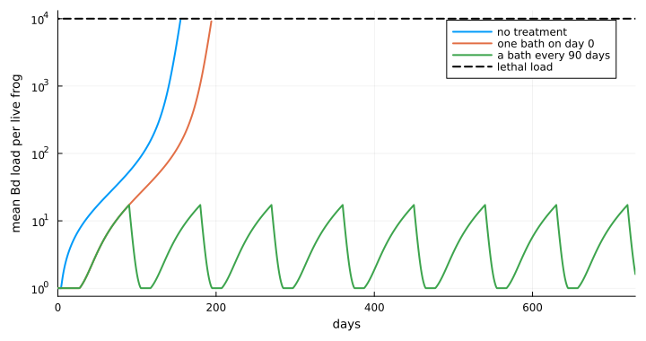
Treatment
Step 4. Protection is lost
a = pond(T(efficacy = 0.9, half_life = 0.05); coverage = 0.8, stages = st3)
step!("Bd toad", "treatment", "+ protection lost, half-life 18 days", rel(u), rel(a),
"most of the small benefit lost")(step = 4, untreated = 0.044, treated = 0.051)Step 5. Mechanism as in trials: survival, not fewer infections
Treated tadpoles are now infected as often as untreated ones but survive better. The loss of step 4 stays, for both mechanisms in the comparison.
effs, tols = [0.5, 0.9, 0.99], [0.3, 0.7, 1.0]
blocking = [rel(pond(T(efficacy = e, half_life = 0.05); coverage = 0.8, stages = st3)) for e in effs]
tolerating = [rel(pond(T(tolerance = τ, half_life = 0.05); coverage = 0.8, stages = st3)) for τ in tols]
plot(["weak", "medium", "strong"], blocking; marker = :circle,
label = "blocks infection (0.5, 0.9, 0.99)", xlabel = "strength of treatment",
ylabel = "adults (fraction of disease-free)", ylims = (0, 0.2), legend = :topleft)
plot!(["weak", "medium", "strong"], tolerating; marker = :square,
label = "survives infection (0.3, 0.7, 1.0)")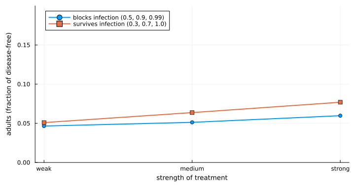
a = pond(T(tolerance = 0.7, half_life = 0.05); coverage = 0.8, stages = st3)
step!("Bd toad", "treatment", "mechanism as in trials: survive, still infected", rel(u), rel(a),
"better than blocking at every strength; Bd persists")(step = 5, untreated = 0.044, treated = 0.064)For Bsal the observed mechanism made treatment fail. Here it makes treatment work better, because Bd is going to persist anyway and what matters is how many infected animals live. With protection lost after a few weeks, though, neither mechanism does much.
Step 6. Lower load
a = pond(load_reducing_treatment(0.7; half_life = 0.05); coverage = 0.8, stages = st3)
step!("Bd toad", "treatment", "+ lower load (70%): also less shedding", rel(u), rel(a),
"little changed: untreated tadpoles, adults and the pond keep Bd going")(step = 6, untreated = 0.044, treated = 0.066)Step 7. How long the bacteria really last
With the fitted decay (half-life 5 days), the protection of one dose at hatching wanes during the 95-day tadpole season, on top of the loss of step 4.
waning_t = load_reducing_treatment(0.7; half_life = 0.05, abundance_half_life = 5 / 365,
protective_fold = 100.0)
schedules = [("at hatching only", Float64[]), ("+ day 45", [45.0]), ("+ days 30, 60", [30.0, 60.0]),
("+ days 20, 40, 60, 80", [20.0, 40.0, 60.0, 80.0])]
doses = [rel(pond(waning_t; coverage = 0.8, stages = st3, redose_days = d)) for (_, d) in schedules]
bar(doses; orientation = :h, yticks = (1:4, first.(schedules)), yflip = true, legend = false,
xlabel = "adults (fraction of disease-free)", xlims = (0, 1.05), xticks = 0:0.25:1,
left_margin = 6Plots.mm, size = (820, 230), color = :steelblue)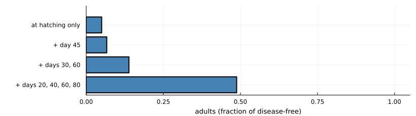
step!("Bd toad", "treatment", "+ fitted decay, one dose at hatching", rel(u), doses[1],
"protection gone before the season ends")(step = 7, untreated = 0.044, treated = 0.05)Step 8. Several doses in a season
step!("Bd toad", "treatment", "+ five doses per season", rel(u), doses[4],
"the largest gain in Part B: about half the disease-free population")(step = 8, untreated = 0.044, treated = 0.488)Each dose renews the protection of treated tadpoles and also treats 80% of those still untreated, infected ones included, so after five doses almost every tadpole has been treated. Part of the benefit comes from that higher coverage, not only from renewed protection.
Step 9. Chance
The same pond model with every tadpole, toad and zoospore a whole number, and every event random (solve(problem; rng)); 50 runs of each case. Mitchell et al.’s rule that toads are extinct below 50 adults, and Bd below 100 zoospores, is no longer needed: each goes extinct when its numbers reach zero.
In terms of the equations, every flow above becomes a random event, drawn in steps of one day (tau-leaping). In each step every animal or zoospore leaves its class with probability $1 - e^{-Rh}$, where $R$ is the sum of its per-capita rates out of that class and $h$ is one day, and goes to each destination in proportion to that rate. New zoospores are a Poisson draw with mean $\big(\rho\,(P_{YU} + (1 - g\kappa)P_{YT}) + \chi\rho_A A_Y\big)\,h$. The yearly events become draws as well: hatchlings are Poisson with mean $\iota\psi A_X$, each dose treats a binomial share $c$ of untreated tadpoles, and an uninfected, untreated metamorph reaches age $\omega$ with probability $(1 - q_U + q_U s_U)\,e^{-\mu_J\omega}$ (likewise for the other classes). The limits of 50 adults and 100 zoospores are not applied.
chanceB(tr; stages = st3, kw...) = [solve(ProbioticPondProblem(m, tr; stages, kw...); rng = Xoshiro(s)) for s in 1:50]
meanB(rs) = sum(rel(r) for r in rs) / length(rs)
five = (coverage = 0.8, redose_days = [20.0, 40.0, 60.0, 80.0])
bu, bt = chanceB(T()), chanceB(waning_t; five...)
base = chanceB(T(); stages = none)
blk = chanceB(ref; coverage = 0.8)
@printf("Mitchell's model (step 0), untreated: toads persist in %d of 50 runs, adults %.2f (equations: extinct)\n",
count(r -> r.toads_persist, base), meanB(base))
@printf("reference treatment (block 90%%) on the step-3 host: %.2f, Bd persists in %d of 50 (equations: %.2f)\n",
meanB(blk), count(r -> r.bd_persist, blk), rel(pond(ref; coverage = 0.8, stages = st3)))
step!("Bd toad", "chance", "+ chance: whole animals", meanB(bu), meanB(bt),
"little change for this model; large changes elsewhere (see text)")Mitchell's model (step 0), untreated: toads persist in 50 of 50 runs, adults 0.78 (equations: extinct)
reference treatment (block 90%) on the step-3 host: 0.41, Bd persists in 32 of 50 (equations: 0.07)
(step = 9, untreated = 0.088, treated = 0.526)For the final model chance changes little. Elsewhere on the ladder it changes a great deal:
- Mitchell’s published outcome does not survive it. In the equations Bd drives the toads to extinction and then dies out itself. With whole animals the toads fall to a few dozen adults, too few tadpoles remain to carry Bd through the winter, Bd is lost, and the toads recover. The published result depends on declaring toads extinct below 50 adults.
- Blocking infection does better. On the step-3 host model, Bd is lost by chance in some runs, and treatment then protects the population fully.
Part B summary
ladder_plot("Bd toad", "adults in years 25 to 35, fraction of disease-free")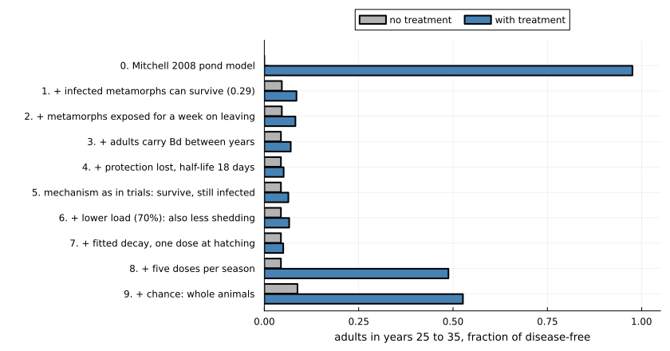
Part C. Bd in frogs
The outcome in Part C is the fraction of 80 frogs sharing one pool that are alive after two years. Disease here depends on the fungal load on each frog. Treatment is introduced at step 3.
Host and pathogen
Step 0. Load on each frog
In the model of Briggs et al. (2010) each frog carries a load of sporangia. Sporangia release zoospores into a shared pool, zoospores infect frogs, and a frog dies when its load reaches a lethal level. Loads run away when there are enough frogs to keep the pool topped up.
The equations below are the model as it stands after step 2. Each live frog $i$ carries $S_i$ sporangia, and the pool holds $Z$ zoospores:
\[\begin{aligned} \frac{dS_i}{dt} &= \frac{\nu\gamma}{V}\,Z + (\eta\nu f - \sigma)\,S_i - \frac{c_i\,S_i}{h + S_i}, \\ \frac{dZ}{dt} &= \varepsilon + \eta(1 - f)\sum_{j\ \mathrm{alive}} S_j - \mu Z - \frac{\gamma}{V}\,N_{\mathrm{alive}}\,Z. \end{aligned}\]
Zoospores meet each frog at rate $\gamma/V$, and a fraction $\nu$ of meetings start a sporangium. Each sporangium releases $\eta$ zoospores a day: a fraction $f$ reinfect the same frog and the rest go to the pool. A frog dies when $S_i$ reaches $S_{\max}$; from then on it sheds nothing and takes up no zoospores. All frogs start with no sporangia, and the pool starts at $\varepsilon/(\mu + \gamma N/V)$. On its own a frog’s load would decline, because $\eta\nu f$ (about 0.04 per day) is below $\sigma$; loads run away only when enough frogs feed the pool.
What each step adds:
- Step 0 is the model of Briggs et al. (2010) with no clearance ($c_i = 0$). The $S_i$ and $Z$ equations without $\varepsilon$ are those of the paper. The outside input $\varepsilon$ is the paper’s external source of zoospores (its Fig. 3D), here as a constant rate.
- Step 1 adds clearance by the frog, $c\,S_i/(h + S_i)$, the same for every frog ($c_i = c$). This term is new in this package.
- Step 2 lets $c_i$ differ: the 80 values are evenly spaced quantiles of a lognormal distribution with median $c$.
| Symbol | Meaning | Value or source |
|---|---|---|
| $S_i$ | sporangia on frog $i$ | state (sporangia per frog) |
| $Z$ | zoospores in the pool | state (zoospores per pool) |
| $N_{\mathrm{alive}}$ | frogs alive | starts at $N = 80$ |
| $V$ | pool volume | 1 volume unit; compendium (briggs2010) |
| $\gamma$ | rate at which zoospores meet a frog | 0.01 volume units per day; compendium (briggs2010) |
| $\nu$ | fraction of meetings that start a sporangium | 0.05; compendium (briggs2010) |
| $f$ | fraction of released zoospores that reinfect the same frog | 0.05; compendium (briggs2010) |
| $\eta$ | zoospores released per sporangium | 17.5 per day; compendium (briggs2010) |
| $\sigma$ | loss of sporangia | 0.2 per day; compendium (briggs2010) |
| $\mu$ | death of zoospores in the pool | 1 per day; compendium (briggs2010) |
| $S_{\max}$ | lethal load | 10,000 sporangia; compendium (briggs2010) |
| $\varepsilon$ | zoospores entering from outside | 1,000 per day; set in this vignette (the value Briggs et al. used for an external source) |
| $c$ | maximum clearance (step 1) | 100 sporangia per day; illustrative |
| $h$ | load at which clearance is half its maximum (step 1) | 500 sporangia; illustrative |
| $c_i$ | clearance of frog $i$ (step 2) | lognormal, median $c$, log-scale sd 0.5; illustrative |
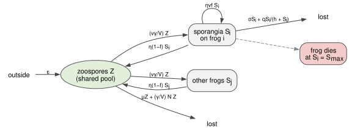
pb = BriggsParameters(:briggs2010)
N, hsat = 80, 500.0
ε = parameter_set(:briggs2010; set = "fig3d").εZ # zoospores from outside, per day
tipping(c; n = N) = solve(LoadTippingProblem(pb; c, h = hsat, N = n, ε, tspan = (0.0, 730.0)))
alive(r) = count(r.alive) / length(r.alive)
@printf("frogs needed for loads to run away: %.0f\n", host_density_threshold(pb))
r0 = tipping(0.0)
step!("Bd frog", "host", "Briggs 2010 load model", alive(r0), NaN, "all die: 80 frogs is above the threshold of 23")frogs needed for loads to run away: 23
(step = 0, untreated = 0.0, treated = NaN)Step 1. Frogs clear some of their load
Frogs have defences. Here each frog removes sporangia at a rate that saturates as load rises: defences cope with a light infection and are overwhelmed by a heavy one (this package’s load tipping model; the clearance values are illustrative).
c = 100.0
@printf("frogs needed for loads to run away: %d\n", critical_host_number(pb; c, h = hsat, ε))
r1 = tipping(c)
r1small = tipping(c; n = 50)
@printf("alive after two years: %.2f of 80 frogs, %.2f of 50 frogs\n", alive(r1), alive(r1small))
step!("Bd frog", "host", "+ saturating clearance by the frog", alive(r1), NaN,
"threshold rises from 23 to 68 frogs; 80 still all die")frogs needed for loads to run away: 68
alive after two years: 0.00 of 80 frogs, 1.00 of 50 frogs
(step = 1, untreated = 0.0, treated = NaN)Step 2. Frogs differ
Frogs now differ in how strong their defences are (lognormal, same median). Treatment starts at step 3, on these frogs: each frog, with probability 0.4, carries bacteria that triple its clearance, for life.
# in random order, so that a group made of the first frogs is a random sample
cs = shuffle(Xoshiro(2), quantile.(LogNormal(log(c), 0.5), ((1:N) .- 0.5) ./ N))
r2 = tipping(cs)
frogs(tr; kw...) = solve(ProbioticLoadProblem(pb, tr; c = cs, c_treated = 3 .* cs, h = hsat, N, ε,
days = 730, kw...); rng = Xoshiro(1))
ref_c = frogs(T(); coverage = 0.4)
step!("Bd frog", "host", "+ frogs differ in their defences", alive(r2), NaN,
"a few of the best-defended survive")(step = 2, untreated = 0.062, treated = NaN)With identical frogs a die-off is all or nothing; with differences it is partial, and it stops when too few frogs are left to sustain the pool. The treatment steps keep these differences: a treated frog clears sporangia three times as fast as it would untreated.
Treatment
Step 3. A treated class
Treated frogs clear sporangia faster. In the load equations above, frog $i$ (with its own clearance $c_i$ from step 2) clears at
\[\tilde c_i = \begin{cases} 3 c_i, & \text{frog } i \text{ treated}, \\ c_i, & \text{otherwise}. \end{cases}\]
On day 0 each frog is treated with probability equal to the coverage, so the treated frogs differ from run to run. Loads follow the equations through each day. At the end of each day a treated frog stops being treated with probability $1 - e^{-\omega}$, where $\omega = \ln 2 / t_{1/2}$. In step 3, $t_{1/2}$ is infinite (treated for life); step 4 sets $t_{1/2} = 30$ days. The package can also let untreated frogs pick up the bacteria from treated ones; that is switched off here.
| Symbol | Meaning | Value or source |
|---|---|---|
| $\tilde c_i$ | clearance of frog $i$, treated or not | $3 c_i$ when treated (median 300 sporangia per day); illustrative |
| coverage | probability that a frog is treated on day 0 | 0.4; illustrative |
| $t_{1/2}$ | half-life of the treated state | infinite (step 3), 30 days (step 4); illustrative |
step!("Bd frog", "treatment", "treated class: 40% of frogs, lasts for life", alive(r2),
ref_c.alive[end] / N, "all survive, including the untreated: protection is shared")(step = 3, untreated = 0.062, treated = 1.0)Because disease depends on the shared pool, treating 40% protects everyone.
Step 4. Protection is lost
a = frogs(T(half_life = 30.0); coverage = 0.4)
@printf("first death: day %d (untreated: day %d)\n", minimum(filter(>(0), a.death_day)),
ceil(Int, minimum(filter(!isnan, r2.death_time))))
step!("Bd frog", "treatment", "+ protection lost, half-life 30 days", alive(r2), a.alive[end] / N,
"die-off delayed by about two months, not prevented")first death: day 217 (untreated: day 158)
(step = 4, untreated = 0.062, treated = 0.075)Step 5. Bacteria as a state of each frog
Until now every treated animal has been simply “treated”, and lost protection all at once. Each frog now carries its own abundance of the applied bacteria, which declines with the half-life fitted to field data (5 days; this project’s own fit), and its protection wanes with it. This replaces the treated class and its 30-day loss with a more realistic version of the same thing; the coverage (40% of frogs) and the size of the effect stay.
In equations, each frog $i$ now carries an abundance $B_i$ of the applied bacteria, in dose units. A bath sets $B_i = 1$ on every live frog in the bathed group (the first 40% of frogs, 32 of 80; the frogs are in random order). Between baths
\[\begin{aligned} \frac{dB_i}{dt} &= -\delta B_i + x\,(\bar{B} - B_i), \qquad \delta = \frac{\ln 2}{t_B}, \qquad \bar{B} = \frac{1}{N_{\mathrm{alive}}}\sum_{j\ \mathrm{alive}} B_j, \\ \tilde c_i &= c_i + (3c_i - c_i)\,\frac{B_i}{B_i + 1/F}, \end{aligned}\]
and $S_i$ and $Z$ follow the equations of step 0 with clearance $\tilde c_i$. The exchange rate $x$ is 0 in this step and is added in step 6. With $F = 100$ a freshly bathed frog has 99% of the extra clearance, and keeps at least half of it until $B_i$ falls to $1/F$: about $\log_2 F \approx 6.6$ half-lives (33 days) without exchange. Step 7 repeats the bath on days 0, 90, 180, and so on.
| Symbol | Meaning | Value or source |
|---|---|---|
| $B_i$ | abundance of applied bacteria on frog $i$ | state (dose units; 1 just after a bath) |
| $t_B$ | half-life of the abundance | 5 days; this package’s fit to field data, not a published estimate |
| $x$ | rate at which frogs exchange bacteria | 0 in step 5; 0.1 per day from step 6, chosen to match the field ratio |
| $F$ | protective fold: abundance after a bath divided by the abundance giving half the effect | 100; illustrative |
| $3c_i$ | clearance of frog $i$ at full effect | as in step 3; illustrative |
| coverage | share of frogs bathed | 0.4, as in step 3; illustrative |
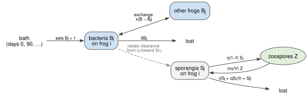
baths(; x = 0.1, F = 100.0, coverage = 0.4, dose_days = [0], days = 730) =
solve(ProbioticAbundanceProblem(pb, T(abundance_half_life = 5.0, protective_fold = F, direct = x);
c = cs, c_treated = 3 .* cs, h = hsat, N, ε, coverage, dose_days, days))
first_death(r) = any(>(0), r.death_day) ? minimum(filter(>(0), r.death_day)) : 0
alone = baths(x = 0.0)
@printf("first death: day %d\n", first_death(alone))
step!("Bd frog", "treatment", "bacteria on each frog, fitted decay; one bath", alive(r2),
alone.alive[end] / N, "die-off delayed by about four weeks")first death: day 185
(step = 5, untreated = 0.062, treated = 0.075)Step 6. The bacteria spread between frogs
Frogs exchange bacteria through the pond. Exchange moves bacteria between frogs without creating any, so they spread but do not sustain themselves: summed over live frogs the exchange terms cancel, and the mean abundance falls at rate $\delta$ whatever $x$ is. That is what the field trial showed: eleven days after most frogs in a pond were bathed, frogs that were never bathed carried about 0.63 times as much of the bacterium as bathed ones, and it then declined in both. To compare like with like, the exchange rate is chosen by bathing 75% of frogs, as in the trial:
for x in (0.0, 0.1, 1.0)
r = baths(; x, coverage = 0.75, days = 30)
@printf("exchange %.1f per day: unbathed/bathed abundance on day 11 = %.2f\n", x,
r.abundance_unbathed[12] / r.abundance_bathed[12])
endexchange 0.0 per day: unbathed/bathed abundance on day 11 = 0.00
exchange 0.1 per day: unbathed/bathed abundance on day 11 = 0.60
exchange 1.0 per day: unbathed/bathed abundance on day 11 = 1.00An exchange rate of about 0.1 per day comes close to the field ratio and is used from here on.
one = baths()
@printf("first death: day %d\n", first_death(one))
step!("Bd frog", "treatment", "+ bacteria spread between frogs", alive(r2),
one.alive[end] / N, "little change: spread shares the bacteria but makes no more")first death: day 192
(step = 6, untreated = 0.062, treated = 0.075)Step 7. Repeated baths
untreated, every90 = baths(coverage = 0.0), baths(dose_days = 0:90:729)
plot(untreated.t, max.(untreated.mean_load, 1.0); yscale = :log10, label = "no treatment",
xlabel = "days", ylabel = "mean Bd load per live frog", legend = :bottomright, xlims = (0, 730))
plot!(one.t, max.(one.mean_load, 1.0); label = "one bath on day 0")
plot!(every90.t, max.(every90.mean_load, 1.0); label = "a bath every 90 days")
hline!([pb.Smax]; color = :black, linestyle = :dash, label = "lethal load")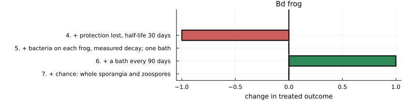
println("| Baths | Alive after 2 years (of 80) | First death (day) |")
println("|---|---|---|")
for (label, r) in (("none", untreated), ("one, day 0", one), ("every 240 days", baths(dose_days = 0:240:729)),
("every 150 days", baths(dose_days = 0:150:729)), ("every 90 days", every90),
("every 90 days, 10% of frogs", baths(coverage = 0.1, dose_days = 0:90:729)),
("every 90 days, 10% of frogs, no exchange", baths(coverage = 0.1, x = 0.0, dose_days = 0:90:729)),
("one, day 150 (loads already high)", baths(dose_days = [150])))
@printf("| %s | %d | %s |\n", label, r.alive[end], first_death(r) == 0 ? "none" : string(first_death(r)))
end| Baths | Alive after 2 years (of 80) | First death (day) |
|---|---|---|
| none | 6 | 158 |
| one, day 0 | 6 | 192 |
| every 240 days | 6 | 192 |
| every 150 days | 80 | none |
| every 90 days | 80 | none |
| every 90 days, 10% of frogs | 80 | none |
| every 90 days, 10% of frogs, no exchange | 9 | 184 |
| one, day 150 (loads already high) | 22 | 160 |
step!("Bd frog", "treatment", "+ a bath every 90 days", alive(r2), every90.alive[end] / N,
"all survive: each bath resets the slow build-up of load")(step = 7, untreated = 0.062, treated = 1.0)This is the one system where bacteria that last only weeks could still work. Load takes months to build; a short burst of extra clearance knocks it back, and the build-up starts again. Because frogs exchange bacteria, bathing a small part of the population protects the rest.
Step 8. Chance
The same model with every sporangium on every frog, and every zoospore in the pool, a whole number, and every event random (StochasticFrogProblem); 20 runs of each case. The frogs keep their own clearances, and 40% of them are bathed.
Time moves in steps of $dt = 0.05$ days. In each step the random events have the rates of the equations, so on average they follow them:
| Event in a step | Number drawn | Term in the equations |
|---|---|---|
| new sporangia on frog $i$ | Poisson with mean $\left(\frac{\nu\gamma}{V} Z + \eta\nu f S_i\right) dt$ | first two terms of $dS_i/dt$ |
| sporangia lost from frog $i$ | Binomial($S_i$, $1 - e^{-(\sigma + c_i/(h + S_i))\,dt}$) | $\sigma S_i + c_i S_i/(h + S_i)$ |
| zoospores released by frog $i$ | Poisson with mean $\eta(1 - f) S_i\,dt$ | $\eta(1 - f)\sum_j S_j$ |
| zoospores lost from the pool | Binomial($Z$, $1 - e^{-(\mu + \gamma N_{\mathrm{alive}}/V)\,dt}$) | $\mu Z + (\gamma/V) N_{\mathrm{alive}} Z$ |
| zoospores from outside | Poisson with mean $\varepsilon\,dt$ | $\varepsilon$ |
A frog dies as soon as $S_i$ reaches $S_{\max}$. The bacteria $B_i$ stay continuous and follow the equation of steps 5 and 6, solved exactly over each step.
bath_tr = T(abundance_half_life = 5.0, protective_fold = 100.0, direct = 0.1)
chanceC(; tr = bath_tr, kw...) = [solve(StochasticFrogProblem(pb, tr; c = cs, c_treated = 3 .* cs, h = hsat,
N, ε, days = 730, coverage = 0.4, kw...); rng = Xoshiro(s)) for s in 1:20]
aliveC(rs) = sum(r.alive[end] for r in rs) / (N * length(rs))
firstC(rs) = (v = sort([first_death(r) for r in rs if first_death(r) > 0]); isempty(v) ? "none" : string(v[cld(length(v), 2)]))
cases = [("no treatment", chanceC(coverage = 0.0), untreated),
("bath every 90 days", chanceC(dose_days = 0:90:729), every90),
("bath every 150 days", chanceC(dose_days = 0:150:729), baths(dose_days = 0:150:729)),
("bath every 90 days, 10% of frogs", chanceC(coverage = 0.1, dose_days = 0:90:729),
baths(coverage = 0.1, dose_days = 0:90:729))]
nothingprintln("| Baths | Equations: alive after 2 years | Chance: alive (mean of 20 runs) | Chance: runs with no deaths | Chance: median first death |")
println("|---|---|---|---|---|")
for (label, rs, det) in cases
@printf("| %s | %d | %.0f | %d of 20 | %s |\n", label, det.alive[end], aliveC(rs) * N,
count(r -> r.alive[end] == N, rs), firstC(rs))
end| Baths | Equations: alive after 2 years | Chance: alive (mean of 20 runs) | Chance: runs with no deaths | Chance: median first death |
|---|---|---|---|---|
| no treatment | 6 | 3 | 0 of 20 | 118 |
| bath every 90 days | 80 | 80 | 20 of 20 | none |
| bath every 150 days | 80 | 9 | 0 of 20 | 151 |
| bath every 90 days, 10% of frogs | 80 | 8 | 0 of 20 | 325 |
step!("Bd frog", "chance", "+ chance: whole sporangia and zoospores", aliveC(cases[1][2]), aliveC(cases[2][2]),
"baths every 90 days still protect; less frequent or narrower bathing now fails")(step = 8, untreated = 0.041, treated = 1.0)Chance makes the frog system harder to protect: a few frogs whose loads happen to run high feed the shared pool and tip the rest. Baths every 90 days still protect every frog in every run, but baths every 150 days, which were enough in the equations, now fail, and so does bathing 10% of frogs, in every run.
Two cautions. The slow build-up is for a population that starts clean. In the field trial the pond was in the middle of an outbreak, treated frogs were surrounded by heavily infected ones, and their loads were back within two months; the last row of the table is the model’s version of treating too late. And the size of the clearance effect of the bacteria is assumed, not measured.
Part C summary
ladder_plot("Bd frog", "fraction of 80 frogs alive after 2 years")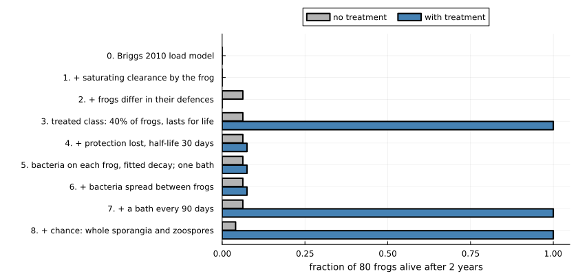
How much did each step move the answer?
The change in the treated outcome at each step, for each system. Bars to the right are steps that made treatment look better; bars to the left, worse.
function change_plot(system)
rows = filter(r -> r.system == system && !isnan(r.treated), ladder)
d = [rows[i].treated - rows[i - 1].treated for i in 2:length(rows)]
labels = ["$(rows[i].n). $(rows[i].added)" for i in 2:length(rows)]
bar(d; orientation = :h, yticks = (1:length(d), labels), yflip = true, legend = false,
xlims = (-1.05, 1.05), xlabel = "change in treated outcome", title = system,
color = [x >= 0 ? :seagreen : :indianred for x in d], left_margin = 6Plots.mm,
size = (840, 70 + 34 * length(d)))
vline!([0.0]; color = :black)
end
change_plot("Bsal")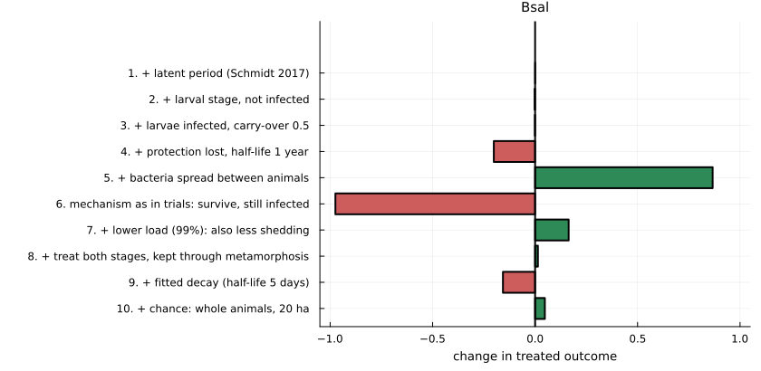
change_plot("Bd toad")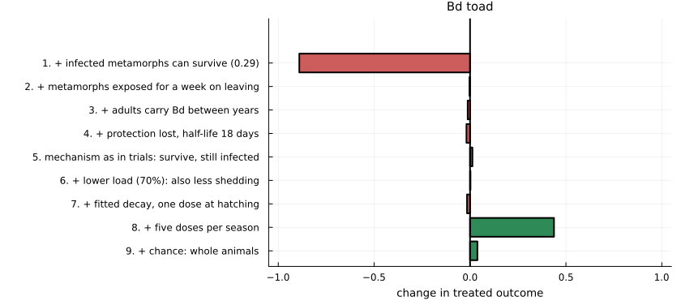
change_plot("Bd frog")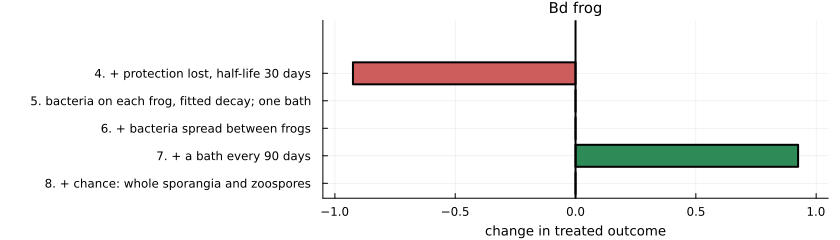
Large bars point both ways in every system. No single addition dominates, and the sign of a step depends on the system: the observed mechanism (survive, still infected) is the largest negative step for Bsal and a positive step for toads.
Does the effect of one piece of realism depend on the others?
A ladder adds things in one order. To check that the order is not driving the conclusions, four pieces of treatment realism are switched on and off in every combination for Bsal, on the full host model of step 3:
- mechanism: blocks infection (0.99), or survive but stay infected (0.99);
- duration: lasts for life, or fitted decay (half-life 5 days);
- spread: none, or between animals at 50 per year;
- stages: adults once, or both stages every quarter with the bacteria kept through metamorphosis.
levels = (
mechanism = ["blocks", "survive"],
duration = ["lasting", "decays"],
spread = ["none", "spreads"],
stages = ["adults", "both"],
)
function factorial_run(mech, dur, spr, stg)
tr = T(; (mech == "blocks" ? (efficacy = 0.99,) : (tolerance = 0.99,))...,
(dur == "decays" ? (abundance_half_life = 5 / 365, protective_fold = 100.0) : (;))...,
direct = spr == "spreads" ? 50.0 : 0.0)
kw = stg == "both" ? (treat = :both, treat_times = quarterly, retention = 1.0) : (;)
return lar(stage, tr; coverage = 1.0, kw...).mean_adults
end
design = [(; mech, dur, spr, stg, outcome = factorial_run(mech, dur, spr, stg))
for mech in levels.mechanism, dur in levels.duration, spr in levels.spread, stg in levels.stages]
design = sort(vec(design); by = r -> -r.outcome)
nothingprintln("| Mechanism | Duration | Spread | Stages treated | Mean adults |")
println("|---|---|---|---|---|")
for r in design
@printf("| %s | %s | %s | %s | %.2f |\n", r.mech, r.dur, r.spr, r.stg, r.outcome)
end| Mechanism | Duration | Spread | Stages treated | Mean adults |
|---|---|---|---|---|
| blocks | lasting | spreads | both | 1.00 |
| blocks | lasting | none | both | 1.00 |
| blocks | lasting | spreads | adults | 1.00 |
| blocks | lasting | none | adults | 0.33 |
| survive | lasting | spreads | both | 0.27 |
| survive | lasting | none | both | 0.22 |
| survive | lasting | spreads | adults | 0.20 |
| survive | lasting | none | adults | 0.13 |
| blocks | decays | spreads | both | 0.07 |
| blocks | decays | none | both | 0.06 |
| blocks | decays | spreads | adults | 0.05 |
| blocks | decays | none | adults | 0.05 |
| survive | decays | spreads | adults | 0.04 |
| survive | decays | none | adults | 0.04 |
| survive | decays | none | both | 0.03 |
| survive | decays | spreads | both | 0.03 |
The average effect of switching each piece on, and how much that effect varies with the other three:
function effect(field, on)
diffs = Float64[]
for r in design
getfield(r, field) == on || continue
partner = only(filter(q -> all(getfield(q, f) == getfield(r, f) for f in (:mech, :dur, :spr, :stg) if f != field) &&
getfield(q, field) != on, design))
push!(diffs, r.outcome - partner.outcome)
end
return diffs
end
println("| Switched on | Mean change | Smallest | Largest |")
println("|---|---|---|---|")
for (field, on, label) in ((:mech, "survive", "survive instead of block"), (:dur, "decays", "fitted decay"),
(:spr, "spreads", "spread between animals"), (:stg, "both", "treat both stages"))
d = effect(field, on)
@printf("| %s | %+.2f | %+.2f | %+.2f |\n", label, sum(d) / length(d), minimum(d), maximum(d))
end| Switched on | Mean change | Smallest | Largest |
|---|---|---|---|
| survive instead of block | -0.32 | -0.80 | -0.00 |
| fitted decay | -0.47 | -0.95 | -0.09 |
| spread between animals | +0.10 | -0.00 | +0.67 |
| treat both stages | +0.10 | -0.01 | +0.67 |
The ranges are wide: the effect of each piece depends strongly on the others. Spread, for example, matters a great deal for a lasting, infection-blocking treatment given to adults, and hardly at all once the bacteria decay in days. (In the model, animals that acquire bacteria from others share the dosing clock of the treated ones, so spread cannot outlast the decay.) A piece of realism therefore cannot be judged by adding it to a simple model alone.
All steps
fmt(x) = isnan(x) ? "" : @sprintf("%.2f", x)
println("| System | Step | Phase | Added | No treatment | With treatment | What changed |")
println("|---|---|---|---|---|---|---|")
for r in ladder
println("| ", join((r.system, r.n, r.phase, r.added, fmt(r.untreated), fmt(r.treated), r.note), " | "), " |")
end| System | Step | Phase | Added | No treatment | With treatment | What changed |
|---|---|---|---|---|---|---|
| Bsal | 0 | host | susceptible and infectious adults | 0.00 | 0.34 | collapse; treated adults live but are not replaced |
| Bsal | 1 | host | + latent period (Schmidt 2017) | 0.00 | 0.34 | almost no change: a one-day delay against a one-week illness |
| Bsal | 2 | host | + larval stage, not infected | 0.04 | 0.34 | untreated population no longer vanishes: larvae are a refuge |
| Bsal | 3 | host | + larvae infected, carry-over 0.5 | 0.04 | 0.33 | small change at this carry-over |
| Bsal | 4 | treatment | + protection lost, half-life 1 year | 0.04 | 0.13 | collapse only delayed |
| Bsal | 5 | treatment | + bacteria spread between animals | 0.04 | 1.00 | full protection: the microbiome maintains itself |
| Bsal | 6 | treatment | mechanism as in trials: survive, still infected | 0.04 | 0.02 | fails; survivors shed for longer, so transmission rises |
| Bsal | 7 | treatment | + lower load (99%): also less shedding | 0.04 | 0.19 | partial; survivors remain infected |
| Bsal | 8 | treatment | + treat both stages, kept through metamorphosis | 0.04 | 0.20 | little gain: treated animals still carry and pass on Bsal |
| Bsal | 9 | treatment | + fitted decay (half-life 5 days) | 0.04 | 0.05 | fails: protection lasts about a month |
| Bsal | 10 | chance | + chance: whole animals, 20 ha | 0.08 | 0.09 | still fails: treated animals are infected and pass Bsal on |
| Bd toad | 0 | host | Mitchell 2008 pond model | 0.00 | 0.98 | untreated: toads and Bd both die out; treated: toads saved, Bd gone |
| Bd toad | 1 | host | + infected metamorphs can survive (0.29) | 0.05 | 0.09 | toads no longer die out, so nor does Bd; treatment now protects poorly |
| Bd toad | 2 | host | + metamorphs exposed for a week on leaving | 0.05 | 0.08 | little further change |
| Bd toad | 3 | host | + adults carry Bd between years | 0.04 | 0.07 | little change in this parameter set |
| Bd toad | 4 | treatment | + protection lost, half-life 18 days | 0.04 | 0.05 | most of the small benefit lost |
| Bd toad | 5 | treatment | mechanism as in trials: survive, still infected | 0.04 | 0.06 | better than blocking at every strength; Bd persists |
| Bd toad | 6 | treatment | + lower load (70%): also less shedding | 0.04 | 0.07 | little changed: untreated tadpoles, adults and the pond keep Bd going |
| Bd toad | 7 | treatment | + fitted decay, one dose at hatching | 0.04 | 0.05 | protection gone before the season ends |
| Bd toad | 8 | treatment | + five doses per season | 0.04 | 0.49 | the largest gain in Part B: about half the disease-free population |
| Bd toad | 9 | chance | + chance: whole animals | 0.09 | 0.53 | little change for this model; large changes elsewhere (see text) |
| Bd frog | 0 | host | Briggs 2010 load model | 0.00 | all die: 80 frogs is above the threshold of 23 | |
| Bd frog | 1 | host | + saturating clearance by the frog | 0.00 | threshold rises from 23 to 68 frogs; 80 still all die | |
| Bd frog | 2 | host | + frogs differ in their defences | 0.06 | a few of the best-defended survive | |
| Bd frog | 3 | treatment | treated class: 40% of frogs, lasts for life | 0.06 | 1.00 | all survive, including the untreated: protection is shared |
| Bd frog | 4 | treatment | + protection lost, half-life 30 days | 0.06 | 0.07 | die-off delayed by about two months, not prevented |
| Bd frog | 5 | treatment | bacteria on each frog, fitted decay; one bath | 0.06 | 0.07 | die-off delayed by about four weeks |
| Bd frog | 6 | treatment | + bacteria spread between frogs | 0.06 | 0.07 | little change: spread shares the bacteria but makes no more |
| Bd frog | 7 | treatment | + a bath every 90 days | 0.06 | 1.00 | all survive: each bath resets the slow build-up of load |
| Bd frog | 8 | chance | + chance: whole sporangia and zoospores | 0.04 | 1.00 | baths every 90 days still protect; less frequent or narrower bathing now fails |
What the exercise shows
- The answer changed at almost every step, and reversed more than once. For Bsal, a model stopped at step 5 says a self-spreading microbiome protects fully; at step 6, the effect seen in trials makes the same treatment fail; treating larvae as well (step 8) does not rescue it, although it would protect fully with bacteria that blocked infection; and at step 9 bacteria that last a few weeks fail whatever else is done.
- Host biology can move the answer as much as treatment biology, but not everywhere. A larval stage changed the untreated fate of the salamanders. One survival probability for infected toad metamorphs reversed both the untreated outcome and the value of the reference treatment. The second vignette tests this like for like in a single model and finds that it depends on the regime: for Bsal at the published host density, six pieces of host biology barely change the outcome, and near the invasion threshold they change it a great deal. Its stochastic version also shows that chance can matter more than any of them: with whole animals, blocking infection in every adult on arrival nearly always eliminates Bsal, where the equations of step 1 here leave about a third of the population.
- How protection works matters more than how strong it is, and its effect has no fixed sign. Letting animals survive infection is the worst change for Bsal and an improvement for toads.
- Effects interact. The factorial shows that the value of spread, of treating larvae or of a lasting treatment each depends on the other pieces.
- The systems differ for structural reasons. A toad cohort passes through a short infected stage once a year and can be re-treated. A salamander must be protected for life against a pathogen that kills in a week. In frogs, where disease follows a load that builds slowly, short-lived bacteria can still work if they are re-applied.
- Chance is a piece of realism, and it changed the answer in every system, in different directions. For Bsal it made the reference treatment, which blocks infection, protect nearly the whole population, because Bsal arriving among treated animals is lost before it can establish; it did not rescue the final treatment, which does not block infection. For toads it overturned the published extinction of both host and pathogen. For frogs it made treatment harder, because random high loads tip the population sooner.
What is not in the models
- In Parts A and B bacterial abundance is a clock since the last dose, not a state of each animal. Only the frog model of Part C tracks it per animal.
- The fold-drop in abundance at which protection is lost has not been measured, nor has the effect of the bacteria on clearance, nor whether applied bacteria survive metamorphosis.
- The Bsal model has no recovery from infection and no years between metamorphosis and maturity. The toad model has thresholds standing in for extinction, and adult toads are never treated.
- The three systems do not share one model structure, so Part B starts from a more complex model than Part A. The second vignette uses one nested model, for the salamander system, in which every piece of biology is a switch.
- No fade-out rule is applied in Part A, so densities can fall to meaningless values and recover. The second vignette shows what such a rule changes.
- The stochastic steps use one introduced infected animal (Part A) or the published introduction (Parts B and C), one population size, and time steps of hours to a day. In Part A the area is 20 hectares; whether the host is lost depends on it (see the second vignette).
References
- Briggs CJ, Knapp RA, Vredenburg VT (2010) Enzootic and epizootic dynamics of the chytrid fungal pathogen of amphibians. Proceedings of the National Academy of Sciences 107:9695–9700. doi:10.1073/pnas.0912886107
- Harris RN, Brucker RM, Walke JB, Becker MH, et al. (2009) Skin microbes on frogs prevent morbidity and mortality caused by a lethal skin fungus. The ISME Journal 3:818–824. doi:10.1038/ismej.2009.27
- Knapp RA, Joseph MB, Smith TC, Hegeman EE, et al. (2022) Effectiveness of antifungal treatments during chytridiomycosis epizootics in populations of an endangered frog. PeerJ 10:e12712. doi:10.7717/peerj.12712
- Madison JD, Osborne OG, Ellison A, Garvey Griffith CN, et al. (2025) Probiotic colonization of Xenopus laevis skin causes short-term changes in skin microbiomes and gene expression. Infection and Immunity 93:e00569-24. doi:10.1128/iai.00569-24
- Mitchell KM, Churcher TS, Garner TWJ, Fisher MC (2008) Persistence of the emerging pathogen Batrachochytrium dendrobatidis outside the amphibian host greatly increases the probability of host extinction. Proceedings of the Royal Society B 275:329–334. doi:10.1098/rspb.2007.1356
- Schmidt BR, Bozzuto C, Lötters S, Steinfartz S (2017) Dynamics of host populations affected by the emerging fungal pathogen Batrachochytrium salamandrivorans. Royal Society Open Science 4:160801. doi:10.1098/rsos.160801
- Smith D, O’Brien D, Hall J, Sergeant C, et al. (2022) Challenging a host–pathogen paradigm: susceptibility to chytridiomycosis is decoupled from genetic erosion. Journal of Evolutionary Biology 35:589–598. doi:10.1111/jeb.13987
- Wang Y, Verbrugghe E, Meuris L, Chiers K, et al. (2021) Epidermal galactose spurs chytrid virulence and predicts amphibian colonization. Nature Communications 12:5788. doi:10.1038/s41467-021-26127-9